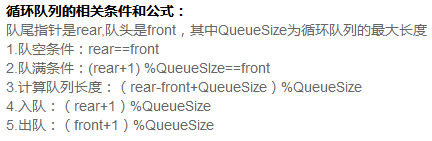

7.3
1. 二叉树不是树的特殊情形，其与度数为二的有序树也不同。在有序树中，若节点只有一个孩子，则无左右孩子之分，而二叉树则不同
2. 链式存储结构 的存储地址不一定连续，只能通过逐个结点的指针顺序存取。
3

4
时间复杂度是指执行算法所需要的计算工作量；
而空间复杂度是指执行这个算法所需要的内存空间。
5
如 char a[10]="abc"; //数组长度为10，字符串长度为3，隐含的‘\n’不算在字符串中
同理 char b[]="abc"; //数组长度为4，字符串长度为3
6
一个浮点数由三部分组成：符号位S、指数部分E（阶码）以及尾数部分M。
单精度浮点数(float)总共用32位来表示浮点数，其中尾数用23位存储，加上小数点前有一位隐藏的1(IEEE754规约数表示法)，2^(23+1) = 16777216。因为 10^7 < 16777216 < 10^8，所以说单精度浮点数的有效位数是7位。考虑到第7位可能的四舍五入问题，所以单精度最少有6位有效数字（最小尺寸）。
同样地：双精度浮点数(double)总共用64位来表示浮点数，其中尾数用52位存储， 2^(52+1) = 9007199254740992，10^16 < 9007199254740992 < 10^17，所以双精度的有效位数是16位。同样四舍五入，最少15位。
7.成员方法又称为实例方法
静态方法又称为类方法